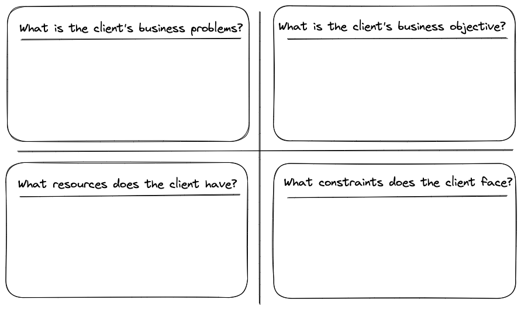

5 Project Management
Managing project efficiently is an essential criterion to succeed in an industry project. Project management varies across teams. There is no single process for managing a project successfully. Project management styles are often heavily influenced by team members’ personal traits. Therefore, a general advice to project groups is to figure out a successful recipe themselves. This section outlines some of the key steps involved in managing industry projects in courses.
5.1 Group Formation
An industry project is a group-based task. Thus, the very first requirement to get started with the project is to form a group. A typical project group will consist of 4-6 members. However, group size may vary depending on the class size and the project’s scope.
In the first class, instructions will be provided about group formation.
5.1.1 Voluntary group
In most of the courses, instructors will allow students to form groups for industry projects. In the first week of the course, during the project briefing, instructor will ask students to form groups for which they will get a week’s time. Students can use either learning management systems (e.g., Canvas, Blackboard, Moodle) or send email or submit a paper to the instructor with a list of student details to form groups.
Students should take this step seriously. Instructor will often ask students to introduce themselves in the first class as a part of the meet-and-greet session. Students should carefully listen to how their fellow students describe themselves. Such an introductory session helps you get to know your class fellows. Subsequently, they should talk to their fellow students. It is advised that students should form a cohesive group after talking and getting to know their potential group members.
Don’t worry if you are unable to form a group. Instructor will help you out before the industry presentation.
If a student is unable to form a group, instructor will allocate her randomly to any of the project groups.
Students will not be allowed to swap groups once they are finalized.
5.1.2 Random group
The instructor may not allow students to form groups in some industry projects. The instructor will randomly pre-allocate students to different project groups.
Such decisions are driven by an educational objective to keep project groups diverse. A diverse project group where members come from different backgrounds help students to overcome cultural and language barriers to successfully execute tasks at hand. Such skills are sought after by employers.
Sometimes instructor randomly forms project groups due to various constraints of course logistics. For example, in an online course where students are located in different time zones.
5.2 Team Management
The next crucial step is team management after the group formation. Team management is all about doing the right things. It involves coordination, division of tasks, delegation, execution, and communication. In industry project, team management should follow a democratic management style where decisions are made based on general consensus. Therefore, engagement of every team member is important.
Individual student with high achievement (e.g., high GPA, straight A-graders, doing well in course assignments) may perform at subpar level due to inefficient team management in industry project.
5.2.1 Choosing a team leader
Each group should designate one of its members as a team leader. The team leader is responsible for coordinating and communicating with the client, instructor, and group. When the group schedule meetings, respond to feedback, submit project materials, and ask questions, team leader of the group should be responsible for sending the emails.
These added tasks do not imply that the team leader takes on an extra workload. If a team leader feels overwhelmed with these responsibilities, the group can rotate the role of team leader among them.
The team leader must include all group members in its communication with the client and instructor.
- When sending an email to the client, all other members should be included in the CC field of the email.
- Sign off your email with the group number and names of all group members.
- Always include course name and group number in the email’s subject line.
5.2.2 Dividing tasks
Deliverables (see Chapter 3) in the project is a sum total of multiple objectives that groups are expected to accomplish in the industry project. Therefore, rightly so, an industry project is a semester-long group-based activity.
To deliver project outcomes that meet expectations of both industry and academia, it is advised that each group divides tasks among its members according to their interests and expertise. Such division of tasks will help the group in the timely completion of project deliverables.
While the process of task divisions will vary across groups, here are some of the guidelines.
Task coordination: Team leader from the group can take on responsibility of coordinating day-to-day project related activities. For within group communication, groups can setup a chat group. For communicating with client and instructor, email is the best channel.
Project components: The project brief document will outline expectation and scope of the business problem, which will have multiple components (e.g., industry analysis, competitor analysis, marketing mix, segmentation, advertising, channel strategy etc.). Carefully review the project brief, and decide what all needs to be accomplished in the project. Subsequently, groups can divide these tasks among themselves.
These are a list of project components that you may encounter during different milestones (see Chapter 2).
- Project Briefing
- Understanding of client, its business operation, and assigned business problems.
- Preparation of questions for industry presentation.
- Formation of group.
- Industry Presentation
- Introduction of group members.
- Seeking clarifications on prepared questions.
- Noting down client’s contact information and preferred method of communicating.
- Consultation Period
- Meeting with client.
- Meeting with instructor.
- Developing business solutions.
- Feedback Session
- Preparation of slides.
- Presentation and Q&A.
- Execution Period
- Finalizing business solutions.
- Writing report.
- Meeting with client and instructor.
- Final Presentation
- Preparing slides.
- Presenting in the class.
- Submission
- Finalizing report.
- Securing individual final copies of report and slides.
- Submitting final report and presentation.
While individual members could be responsible for separate project components, it is advised that the group discusses them together at some point, building a consensus. Final solutions that will be part of the final project report should arrive via group discussion, critical thinking, and agreement.
When you are thinking critically, you are analysing (breaking things down), evaluating (making judgements based on evidence) and synthesising or creating (putting parts together into a coherent whole).
Critical thinking is about asking good questions, identifying bias, challenging ideas, finding credible evidence, reflecting on your own learning and transferring these skills to your professional practice.
Critical thinking is like an onion … as you peel off one layer (begin to analyse the argument), there is another layer (more questions), and another layer (deeper questions) … and on … and on..
Quantitative analysis: Business solutions that involve quantitative analyses are extensive. Quantitative analyses involve data collection, cleaning, summary, modeling, and reporting. For such tasks, it is advised to break down tasks among group members.
Group presentation: It is advised that all group members participate in the project presentations. However, groups can divide content preparation for the slides based on individual responsibility taken early.
Meeting minutes: Groups are advised to maintain a record of meeting minutes. Meeting minutes should include the following items: date, participants, and discussed topics. If the meeting was conducted to decide on conflicted topics, then include motion and voting outcomes. Such a record can serve as evidence showing your progress in the project.
5.2.3 Teamwork
Every team member in the group must contribute. Otherwise, team members may face individual grade penalties (see Chapter 4). Individual contribution in the project shows through the following actions.
- Responding to team communications.
- Completing tasks assigned to the individual team member in a timely manner.
- Attending meetings with the team, client, and instructor.
- Active participation in the presentations.
- Being flexible to take on extra responsibility to complete the project on time.
- Taking initiative and lead when required.
If your project team has N members, your contribution in the project must be at least \(1/N \times 100\)%.
For example, if your team has 5 members, the individual contribution must be at least \(1/5 \times 100 = 25\)%.
In a real business environment, you do not get to choose your team members for a project. Therefore, while you are in an academic environment, an industry project in a course is an excellent opportunity to learn team skills that require dealing with different personalities and work styles.
5.3 Client Management
Managing the industry partner or client is a crucial step of project management. Industry partners are investing their time and resources in such an academia-industry collaboration. We should be thankful for clients’ engagement and remember that they have other important businesses to run. Therefore, always be nice to the client.
5.3.1 Client relationship
Building a good relationship with a client is important. The first rule of client management is to show respect. Clients may have a strong affinity for their brands, and they may be heavily involved in their companies personally. Therefore, avoid overly criticizing clients that may come across as insults. If you have negative comments about clients’ operation, think carefully how to put it politely, if possible, with a positive spin.
Critically think about the client’s business problems to find opportunities. To that end, you should focus on the client’s strengths rather than overly fault-finding. Instead of commenting on what the client has not done, you should focus more on what they have done and how to improve them. Such an approach will make your interactions with the client mutually beneficial and both of you will enjoy the process.
To perform well and gain client’s appreciation, it is important that students are well informed of the client’s business operation and are focused on solving the assigned business problems faced by the the client. Business solutions should strive to discover new insights, creative ideas, and feasible business strategies. With a good understanding of the business constraints faced by the clients, students should come out with out-of-the-box solutions. To that end, it is advised that rather than listing actions that the client could implement, students could focus on key topic, dive deep into it, and propose strategies that will have the highest chance of improving the client’s key business operation.
Don’t think of building a client relationship for a short duration just to finish the project. You should think of it as an investment in career building by having long-term relationship with the client. Such a relationship will benefit you in future. For example,
- Client can provide you with glowing recommendation when you go to job market.
- Client can provide you with an employment opportunity (e.g., internship or full time position).
- Client can organize competition in a project where the winning team gets a prize.
- Client can give you invaluable entrepreneurial experience.
5.3.2 Client interview
I keep six honest serving-men;
(They taught me all I knew)
Their names are
WhatandWhyandWhen
And
HowandWhereandWho.By Rudyard Kipling (1902), “The Elephant’s Child” from Just So Stories
The feasibility of your business solutions depends on your deep understanding of business problems faced by the client. And, you develop such an understanding by asking appropriate questions to your client. Even if you think questions are too simple to ask, go ahead and ask. To ensure you have understood the client’s answers, state them back to your client during the interview in your own words.
Your client interview questions should include the following questions to seek clarity on assigned business problems.
- Ask them to repeat the business problem as described in the project briefing?
- What is the cause of the problem?
- What has been past strategies to address the problem?
- What are the constraints or limitations that the business is facing?
- Why the business problem is critical to their business operation?
- When they plan to implement new business strategies?
- Where their business is operating (e.g., local vs. global market)
- How they would like to approach the problem (e.g, within or without constraints)?
- Who are the contact persons from the company to seek additional resources?
For your first meeting with the client, groups should perform preliminary background research on the client. You should read the project brief document and client presentation, explore client’s website and social media presence, and look into the client press coverage. The main goal of such a background research is to arrive at the interview fully prepared. You can adopt a client interview sheet as shown in Figure 5.1.

“What is the client's business problem” is what the client needs with and your main goal to provide business solutions.
“What is the client's business objective” is the essence of the project, and it defines client’s expectation from project deliverables.
“What resources does the client have” gives you leverage to tackle the assigned business problems.
“What constraints does the client face” provides you with an business environment where you are going to propose your business solutions.
Based on answers to the above questions, you should start discussing about ideas and solutions for the client’s business problems.
You should always take meeting minutes and maintain such records. For your subsequent meetings, you should review the past meeting minutes to ensure you are progressing and not stuck on some particular issue. Also, groups should organize brainstorming sessions before meeting with the client or instructor.
5.4 Resource Management
Sharing and collaborating are often challenging tasks when working in a team. Online chat groups (e.g., WhatsApp), emails, and collaborative tools (such as Microsoft Team, Zoom, Collaborate Ultra) help you with online communication. Whenever possible it is advised to conduct face-to-face meetings rather than virtual.
In the project, groups may also need to share additional resources (such as documents, data, reports, articles, and references).
5.4.2 Role of instructor
The course instructor is one of the valuable resources at your disposal. It would be best if you utilized the instructor’s expertise to your own advantage in executing industry projects.
Meet with the instructor regularly. Update her about your progress, your discussion with the client, and the issues you are struggling with. The instructor has a clear understanding of the scope of the project, and she is aware of the time constraint that students face in the course. Therefore, she would be in the best position to guide you through timely project completion. She can provide you with relevant literature reference, clarify your doubts, and can talk to the client on your behalf.
Your instructor is going to grade your project deliverables. She will also detect any cases of plagiarism.
5.5 Summary
Project management style varies across groups. This chapter outlines some recommendations that will help you in the timely completion of project deliverables. It is perfectly fine if groups follow their own style, tools, and process in managing an industry project.